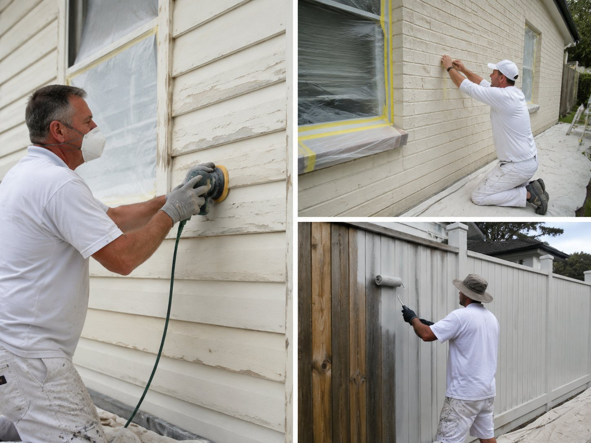
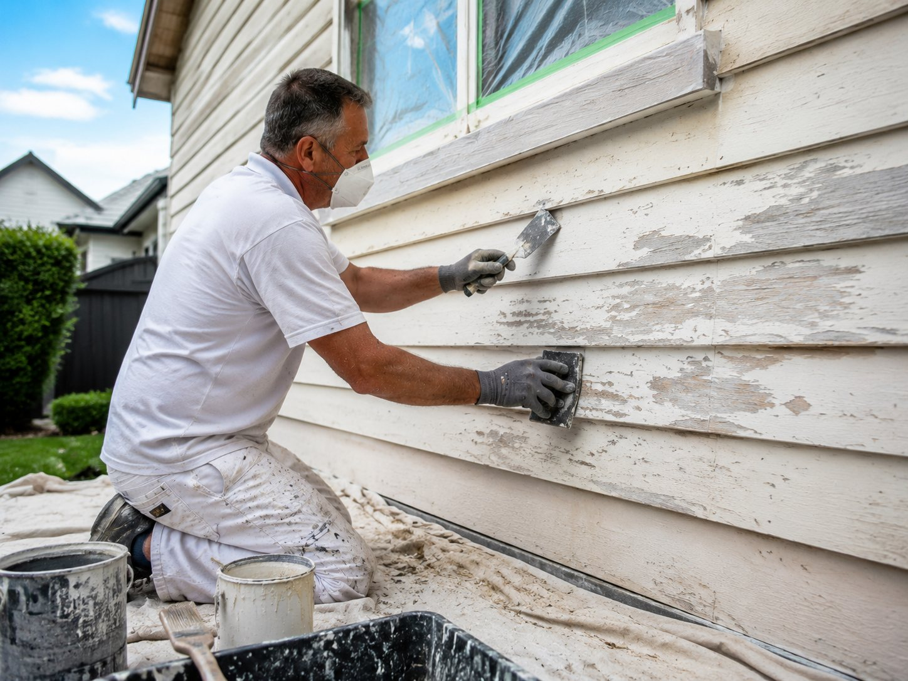

Weatherboard, brick, fences, garage doors and facades — what actually determines a paint job that survives Geelong's wind, sun and coastal air, what it costs, and how to find a professional, trustworthy painter for the job. This guide covers each surface in brief and links through to a full deep-dive on every one.
Geelong exteriors need a 100% acrylic membrane system (Dulux Weathershield or equivalent) over a substrate-matched primer — oil-based for weatherboard, masonry-grade for brick and render. A full exterior repaint typically runs $7,000–$14,000 for a single-storey home and lasts 7–10 years. Full cost breakdown →
Why Geelong's Weather Changes the Answer
Geelong sits in an exposed spot on Port Phillip and Corio Bay, which means most homes deal with more direct sun and stronger prevailing wind than sheltered Melbourne suburbs. The effect is sharpest right on the coast: coastal exterior painters Torquay homeowners call on deal with salt-laden onshore wind off the surf coast that accelerates chalking on standard paints, while coastal house painting Ocean Grove jobs face the same salt exposure combined with full afternoon sun on west-facing facades, which tends to bring the repaint cycle forward by a year or two compared to inland suburbs.
That's the reason a proper repaint starts with matching the paint system to the substrate and the exposure, not just picking a colour — and it's exactly what our Exterior House Painters Geelong team is built around: durable, weather-resistant finishes that protect the home underneath, not just refresh its colour.
Signs Your House Exterior Needs Repainting
- Chalking — a powdery residue that rubs off on your hand when you touch the wall, a clear sign the paint film has broken down under UV exposure.
- Fading or colour loss, especially on north and west-facing walls that catch the most direct sun.
- Cracking or flaking paint, particularly around board joins on weatherboard or along render cracks on brick.
- Peeling near gutters, eaves or windows, often a sign moisture is getting behind the paint film rather than just a cosmetic issue.
- Visible timber greying where paint has worn through completely on high-exposure surfaces like fences and fascias.
Any one of these on its own is usually just cosmetic. Several appearing together, or paint failure less than 5 years after the last repaint, is worth a proper inspection — it can point to a prep or product issue that a straightforward repaint won't fix on its own.
Exterior Surfaces We Cover
Whichever surface brought you here, it's part of our broader Exterior Painting Services Geelong homeowners already rely on — built around quality workmanship and finishes that hold up to real weather, not just the first inspection.

What Does Exterior Painting Cost in Geelong?
Cost depends on substrate, size, prep required and access — but as a starting benchmark, a full exterior repaint of a single-storey brick-veneer or weatherboard home in Geelong typically runs $7,000–$14,000, while individual jobs like a fence or garage door can run from a few hundred dollars. Double-storey homes, heavy prep, elaborate colour selection with multiple accent tones, or heritage detailing push toward the top of the range. See the full exterior painting cost guide →
DIY or Call a Professional?
A garage door or a single fence panel is a realistic weekend DIY job for a confident homeowner. A full house exterior is a different proposition — height access, weather timing, and the prep work that determines whether paint lasts 2 years or 10 are where most DIY exterior jobs fall short. Compare DIY vs professional exterior painting →
Exterior Painting Preparation Checklist
Whatever the surface, proper surface preparation covers the same fundamentals before a single coat goes on — this is the one step exterior painting jobs of every size have in common:

- Wash down the full surface to remove dirt, cobwebs and chalky residue
- Scrape and sand back all loose, flaking or peeling paint to a sound edge
- Repair or replace damaged sections — rotten timber, cracked render — before priming
- Spot-prime bare or repaired areas with the primer matched to that substrate
- Caulk gaps and joins with a flexible, paintable exterior filler
- Apply two coats of the correct exterior paint system for the surface
Skipping any of these is the single biggest reason a repaint fails within 2–3 years instead of lasting the usual 7–10.
Choosing an Exterior Painter in Geelong
Professional exterior painters Geelong homeowners can rely on will always give you a written, itemised quote that names the primer system, number of coats, and paint line — not just a total price. The best exterior house painters Geelong has to offer will also explain how they handle wet weather delays, whether prep (sanding, filling, masonry repair) is included, and what warranty covers the workmanship. Full checklist for choosing an exterior painter →
Explore All Exterior Painting Guides
Cost Guide
Full 2026 pricing by job and home size
Weatherboard Painting
Substrate, prep and repaint-vs-replace
Brick Painting
Breathable systems and whether to paint at all
Fence Painting
Paint vs stain and Colorbond rules
Garage Doors & Trims
Spray finish, fascias and gutters
Outdoor Facades
Full-envelope repaints and colour schemes
Choosing a Painter
Vetting, quotes and red flags
DIY vs Professional
The honest time and money maths
Pro Tips & Hacks
Habits that make a repaint last